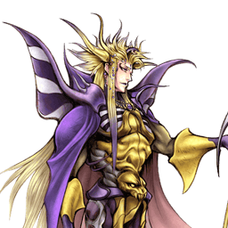

Final Fantasy II
The Emperor
Poseur de pièges défensif : Thunder Crest, Flares et la boucle Starfall en win condition
Position dans la méta
Tier A 13ᵉ sur 30 — tier list tournoi 2017 de dissidia.wiki (moitié valeurs de matchups, moitié avis de joueurs experts).
Vue d'ensemble
The Emperor est une puissance défensive fondée sur la pose de pièges. Sa stratégie consiste à remplir le stage de projectiles persistants et de sorts sans interaction possible, qui forcent l'adversaire proche à bouger : interdire l'espace avec le Thunder Crest imblocable, polluer le terrain de Flares et poser des Dreary Cells contre les menaces aériennes. Il excelle à stopper les personnages de corps à corps, car ses pièges restent actifs même quand il se fait toucher — il est difficile à attraper et profite des trades mieux que quiconque dans le jeu.
Laissé tranquille, il dispose d'une win condition unique : Starfall, HP attack chargeable à tête chercheuse qui fait pleuvoir un barrage de projectiles sur le terrain. Elle lui permet d'appeler l'assist Jecht et de charger un nouveau Starfall pour les enchaîner dans les grands stages. Les builds Side by Side sont très forts pour cette raison, et parce que ses pièges mènent aux dégâts HP en général ; les builds EX restent viables au besoin, et la synergie d'assist est adéquate pour les interruptions et les combos.
Historiquement considéré comme un personnage high tier, il restreint énormément les options des personnages de mêlée et les force à prendre de gros risques pour empêcher l'escalade. Sans pièges, en revanche, il ne survit que par la défense fondamentale (blocks, timing de dodge). Son offense aérienne est exceptionnellement défaillante — pas de pokes de mêlée conventionnels ni d'outils rapides à mi-distance. Les combattants à longue portée (Ultimecia, Kefka) le mettent en grande difficulté en ignorant largement ses pièges, et il doit se méfier des attaques disjointes comme le Blasting Zone de Squall ou le Rope Knife de Firion.
Bien joué, The Emperor est un personnage fort et suffocant, aux conversions de combo libres et au plafond de compétence élevé. Mais ses désavantages sont d'autant plus prononcés quand ils s'appliquent, ce qui en fait l'un des personnages les plus polarisés du Dissidia 012 compétitif.
Forces
- Area denial : les pièges remplissent l'espace et suppriment les options adverses, avec des réactions en chaîne très rentables.
- Win condition unique : Starfall est long à lancer mais inévitable une fois parti — il force l'adversaire à approcher et interagir avec les pièges, ou à brûler des ressources pour éviter les dégâts HP.
- Mixups défensifs : recovery complète courte sur la plupart de ses moves et potentiel de trade des projectiles lui permettent d'ajuster ses timings d'attaque et de dodge même contre des adversaires aguerris.
- Gain d'assist : la rotation de moves à faible recovery (Starfall, Mine, Dreary Cell) remplit vite la jauge ; chaque piège et Flare peut mener aux dégâts HP, qui la remplissent encore plus vite avec Side by Side.
- Punishes à gros dégâts : Thunder Crest et Dynamite ouvrent des combos massifs, boostés par les Mines ; les assists qui frappent vers le bas (Jecht, Yuna) peuvent pratiquement doubler les dégâts, et un combo Thunder Crest peut garantir un Bravery Break depuis 2000 de bravery.
- Recovery actionnable : recovery plus courte que la plupart des personnages sur ses attaques, ce qui lui permet d'attaquer et de bloquer derrière plus vite que la majorité du roster.
Faiblesses
- Aucun abare de mêlée aérien : sans pièges autour de lui, l'absence de moves de mêlée en l'air est un défaut majeur de son plan de jeu ; Mine et Dreary Cell d'urgence peuvent trader avec certains moves, mais sans fiabilité.
- Matchups polarisés : le spread le plus lopsided du jeu. Certains personnages sont purement niés dans les bonnes conditions, d'autres peuvent négliger les pièges et forcer une offense pour laquelle il n'est pas armé.
- Forces de stage polarisées : les stages affectent son plan de jeu plus que la plupart des autres personnages, l'obligeant parfois à apprendre de nouvelles stratégies pour les stages atypiques ou petits.
Stats & vitesses
| Nom | The Emperor (皇帝) |
|---|---|
| Jeu d'origine | Final Fantasy II |
| ATK de base (LV100) | 110 (Average) |
| DEF de base (LV100) | 112 (High) |
| Vitesse de course | 8 (Below Average) |
| Vitesse de dash | 81 (Below Average) |
| Vitesse de chute | 97 (Slow) |
| Chute après esquive | 44 (Slow) |
| BRV la plus rapide | 21F (Bombard) |
| HP la plus rapide | 35F (Flare, Ground) |
| HP en 1 coup | Yes (Flare, Dreary Cell) |
| HP links | Yes (Combos only) |
| Command block | Yes (Magic Block) |
| Armes | Daggers, Poles, Rods, Staves |
| Armures | Bangles, Clothing, Hairpins, Hats, Headbands, Robes |
| Armes exclusives | Diamond Mace, Demon's Rod, Mateus's Malice |
| Camp | Chaos |
| Doubleur (JP) | Kenyu Horiuchi |
| Doubleur (ENG) | Christopher Corey Smith |
Point or : ce personnage · petits points : le reste du cast · trait violet : moyenne. Valeurs du wiki, plus bas = plus rapide ; le rang à droite se lit directement (1ᵉʳ = le plus rapide).
Coups
Barre plus courte = coup plus rapide. Startup en frames (60 i/s, données dissidia.wiki), priorité indiquée après la valeur. Les coups marqués ★ sont les plus rapides du kit — ce sont en général vos meilleurs outils de punish et de pression.
Braveries
Au sol
Bombard Melee High
Son poke rapproché : casse les blocks, counterpoke les priorités inférieures en neutral et ouvre les combos d'assist sur hit. La combinaison Melee High et startup 21F est exceptionnelle, et la recovery courte le rend très sûr seul ; il peut aussi renvoyer le Flare bleu réfléchi pour en reprendre le contrôle. Risqué sans pièges protecteurs (portée très courte, hitbox un peu bancale suivant le bâton, active plus longtemps à sa droite) ; son hit stun énorme permet à plusieurs assists de comboter, et c'est un bon finisher après Thunder Crest (positionnement, EX Force).
| Dégâts de base | 5, 5 x 3 (20) |
|---|---|
| Startup | 21F |
| Type | Physical > Magical |
| Priorité | Melee High |
| EX Force | 84 |
| Effets | Chase |
| CP (maîtrisé) | 30 (15) |
Landmine Ranged Low
Move de base : remplit la jauge d'assist sans risque, ajoute beaucoup de dégâts dans les combos Thunder Crest et occupe rapidement un peu d'espace, avec une recovery courte non committale. Les mines arrêtent le mouvement basique mais perdent contre les dashes ; léger effet d'aspiration sur un adversaire en hit stun. Deux Landmines posées à la fois, huit maximum sur le terrain (les plus anciennes disparaissent) ; attention, l'aspiration peut gâcher les assists à Wall Rush au sol (Jecht, Yuna, Gilgamesh) si l'adversaire y tombe avant Thunder Crest — Flare peut rattraper la situation.
| Dégâts de base | each (35) |
|---|---|
| Startup | 29F |
| Type | Magical |
| Priorité | Ranged Low |
| EX Force | 0 |
| Effets | Absorb |
| CP (maîtrisé) | 30 (15) |
Light Crest (ground) Ranged Low
Outil secondaire (une seule au sol), à combiner avec Flare et Dreary Cell pour anti-air. Recovery assez haute pour lui et hit stun faible qui complique les combos, mais un hit donne du temps pour poser d'autres pièges. S'active quand l'adversaire passe au-dessus du sigle : cinq projectiles à léger tracking, qui rebondissent sur murs et projectiles et peuvent cross up les blocks ; le sigle apparaît légèrement au-dessus du sol et rate donc les personnages debout immédiatement.
| Dégâts de base | each (7) |
|---|---|
| Startup | 37F |
| Type | Magical |
| Priorité | Ranged Low |
| EX Force | 0 |
| CP (maîtrisé) | 30 (15) |
Dynamite (ground) Ranged Low (Special when sticked)
Quasi identique à la version aérienne, mais met The Emperor en l'air : utile pour placer le projectile devant lui, couvrir l'angle droit vers le bas (impossible en aérien) et entretenir le booster Pre-Jump. En contrepartie, l'état aérien l'expose davantage aux punishes d'assist BRV aériens (Kuja, Tidus).
Level 1 Ranged Low (Special when sticked)
| Dégâts de base | 30 (1 x 5, 25) |
|---|---|
| Startup | 43F |
| Type | Magical |
| Priorité | Ranged Low (Special when sticked) |
| EX Force | 60+ |
| Effets | Absorb, Wall Rush |
| Cancels | Dodge |
| CP (maîtrisé) | 30 (15) |
Level 2 Ranged Mid (Special when sticked)
| Dégâts de base | 40 (1 x 7, 33) |
|---|---|
| Startup | 80F (charge) 3F (hitbox after shot) |
| Type | Magical |
| Priorité | Ranged Mid (Special when sticked) |
| EX Force | 60+ |
| Effets | Absorb, Wall Rush |
| Cancels | Dodge |
| CP (maîtrisé) | 30 (15) |
Level 3 Ranged High (Special when sticked)
| Dégâts de base | 50 (1 x 10, 40) |
|---|---|
| Startup | 120F (charge) 3F (hitbox after shot) |
| Type | Magical |
| Priorité | Ranged High (Special when sticked) |
| EX Force | each hit (3) |
| Effets | Absorb, Wall Rush |
| Cancels | Dodge |
| CP (maîtrisé) | 30 (15) |
Thunder Crest Unblockable
LE piège incontournable : area denial, staggers de block et combos variés, très efficace contre les personnages de corps à corps (Onion Knight, Jecht, Prishe). Vrai unblockable qui ignore toutes les priorités — blocks et Assist Change LV2 perdent toujours — et reste actif même si The Emperor est touché, d'où des trades contre les HP attacks (Lord of Arms de Firion) pouvant garantir des Bravery Breaks. Combote dans Flare pour du HP solo, dégâts BRV démultipliés par les Landmines. Assez lent pour être puni après un ground dodge ; sol uniquement, n'interagit pas avec projectiles ni attaques disjointes (Trine de Kefka, Firaga de Cloud, Thunder Barret et Blasting Zone de Squall). Le sigle avance un peu au sol, rebondit sur les murs, s'arrête aux rebords, aspire légèrement personnages et assists quand il est actif ; posable dans n'importe quelle direction en input Cercle neutre.
| Dégâts de base | 2 x 17, 6 (40) |
|---|---|
| Startup | 35F |
| Type | Magical |
| Priorité | Unblockable |
| EX Force | 60 |
| Effets | Absorb |
| Cancels | Dodge |
| CP (maîtrisé) | 30 (15) |
En l’air
Mine Ranged Low
Pendant aérien de Landmine, move clé : rapide, non committal, occupe vite l'espace aérien et remplit la jauge d'assist en neutral en toute sécurité. Grosse option de dégâts BRV en combo filler, notamment dans les combos Thunder Crest et d'assist dans le coin. Spread différent des Landmines, aspiration sur adversaire en hit stun pouvant déclencher des réactions en chaîne vers d'autres pièges ou des conversions d'assist ; toujours posées par deux, huit actives maximum, explosion après un temps fixe.
| Dégâts de base | each (35) |
|---|---|
| Startup | 23F |
| Type | Magical |
| Priorité | Ranged Low |
| EX Force | 0 |
| Effets | Absorb |
| CP (maîtrisé) | 30 (15) |
Light Crest (midair) Ranged Low
Version plus horizontale mais similaire au sol : outil secondaire, anti-air préventif ou stoppeur de moves lents au-dessus de lui (Black Hole d'Exdeath), recovery longue hors dodge cancel. Énorme portée d'activation verticale et détection à 360°, ce qui la rend facile à désamorcer par le simple mouvement. Quatre projectiles au même hit stun et homing que la version sol ; hit stun peu menaçant seul, mais chaînable vers Dreary Cell et Mines par aspiration, et les hits au mur aident à convertir en combo d'assist. Peut aussi déclencher l'Assist Charge adverse au grand bénéfice de The Emperor.
| Dégâts de base | each (7) |
|---|---|
| Startup | 37F |
| Type | Magical |
| Priorité | Ranged Low |
| EX Force | 0 |
| CP (maîtrisé) | 30 (15) |
Dynamite (midair) Ranged Low (Special when sticked on surface)
Outil de pression et de combo : la charge augmente la priorité (stagger puis guard crush des blocks), et l'aspiration forte plus le hit stun généreux en font un bon départ de combo d'assist, sur hit comme sur block. Le LV3 combote naturellement dans la boule collée contre un adversaire au sol ou au mur, et le maintient assez longtemps pour l'envoyer dans Flares ou Dreary Cells (constance moindre au plafond). Une fois collée à une surface, la boule aspire depuis la mi-distance et passe en priorité Special : imblocable, mais annulable par attaques, dashes et Ranged supérieurs. L'explosion, qui fait l'essentiel des dégâts, repousse toujours l'adversaire à l'opposé de The Emperor — orientable à la caméra pour le Wall Rush ou l'enchaînement de pièges. Visée ajustable manuellement jusqu'à ~45° ; la charge affecte priorité, dégâts, portée max, force d'aspiration et durée une fois collée.
Level 1 Ranged Low (Special when sticked on surface)
| Dégâts de base | 30 (1 x 5, 25) |
|---|---|
| Startup | 43F |
| Type | Magical |
| Priorité | Ranged Low (Special when sticked on surface) |
| EX Force | 60+ |
| Effets | Absorb, Wall Rush |
| Cancels | Dodge |
| CP (maîtrisé) | 30 (15) |
Level 2 Ranged Mid (Special when sticked on surface)
| Dégâts de base | 40 (1 x 7, 33) |
|---|---|
| Startup | 80F (charge) 3F (hitbox after shot) |
| Type | Magical |
| Priorité | Ranged Mid (Special when sticked on surface) |
| EX Force | 60+ |
| Effets | Absorb, Wall Rush |
| Cancels | Dodge |
| CP (maîtrisé) | 30 (15) |
Level 3 Ranged High (Special when sticked on surface)
| Dégâts de base | 50 (1 x 10, 40) |
|---|---|
| Startup | 120F (charge) 3F (hitbox after shot) |
| Type | Magical |
| Priorité | Ranged High (Special when sticked on surface) |
| EX Force | each hit (3) |
| Effets | Absorb, Wall Rush |
| Cancels | Dodge |
| CP (maîtrisé) | 30 (15) |
Attaques HP
Au sol
Starfall (ground) Unblockable
Quasi identique à la version aérienne, utilisée plus souvent. Particularités : le léger mouvement ascendant initial esquive les attaques au sol très basses (Waterkick de Tifa, Valiant Blow de Cecil), et l'état aérien préserve le booster Pre-Jump sans sauter. The Emperor bloque les attaques Ranged Low pendant l'incantation (Shadow Flare de Sephiroth, Blizzara de Lightning, Stun de Shantotto) ; une pression brève rend actionnable très vite, à la fois pour remplir la jauge d'assist et comme sorte de command block.
| Dégâts de base | each (3) |
|---|---|
| Startup | 521F |
| Type | Magical |
| Priorité | Unblockable |
| EX Force | 0 |
| Effets | Absorb, Wall Rush, Block Low (Ranged) |
| CP (maîtrisé) | 30 (15) |
Flare (ground) Ranged High
Le Flare bleu, l'un de ses moves signature : occupe l'espace, rend le combat rapproché pénible, et sert dans les combos Thunder Crest pour du HP solo. Force l'adversaire à bouger ou à le réfléchir avec une HP attack, offrant une ouverture. Hit stun faible et combos situationnels, mais il peut éliminer les assists avec Auto Assist Lock On et protéger contre diverses attaques de mêlée ; l'explosion dépasse un peu le projectile et le spawn près de The Emperor en fait une interruption faussement rapide. Brève vulnérabilité après usage : gare aux dodges à travers, aux assists latéraux, aux command blocks haute priorité (Jecht Block, Omni Block d'Exdeath) et aux builds Bravery Boost on Dodge ; un blodge peut déclencher l'explosion sans dégâts. Réfléchi, il se renvoie à volonté avec Bombard — et le choix adverse de le réfléchir donne du temps pour poser des pièges ou charger la jauge.
| Startup | 35F |
|---|---|
| Priorité | Ranged High |
| EX Force | 60 |
| CP (maîtrisé) | 30 (15) |
Dreary Cell (ground) Unblockable
Piège à un coup qui détone à l'approche : area denial, perturbation du jeu agressif et combos HP solo, actif même si The Emperor est touché. Priorité unblockable — seule l'esquive de l'explosion évite les dégâts — et détonation en dégâts HP qui active meter depletion et le gain d'assist de Side by Side : très efficace anti-mêlée. L'aspiration attire quiconque manque de momentum ou de recovery courte, et prend souvent les assists dans le souffle. Utilisée de pair avec Thunder Crest au sol ; aucune protection innée pendant la pose (gare à Thunder Barret de Squall, Snatch Shot de Kuja, Reel Axe de Firion) et faiblesse innée aux builds Bravery Boost on Dodge. Le sigle, petit, représente fidèlement la portée d'activation ; l'aspiration fonctionne même sigle inactif sur adversaire en hit stun, plus fort que celle des Mines.
| Startup | 69F (total), 43F (activation) |
|---|---|
| Type | Magical |
| Priorité | Unblockable |
| EX Force | 36/54/72 |
| Effets | Absorb |
| CP (maîtrisé) | 30 (15) |
En l’air
Starfall (midair) Unblockable
La version la plus importante de son move le plus important : dégâts HP forcés, bouclier magique constant pendant l'incantation (block Ranged Low) et gains d'assist rapides en tapotant Carré puis dodge. À lancer une fois les pièges posés : la plupart des adversaires doivent approcher et interagir avec eux, avec un risque disproportionné pour des personnages comme Tifa, Zidane et Jecht. En cas de réussite, l'adversaire subit les dégâts HP ou dépense Assist/EX ; le frame advantage est énorme et, avec l'assist Jecht et le gain de Side by Side, les Starfalls suivants sont quasi garantis (au minimum, le Wall Rush au sol assure la moitié du cast suivant). Une fois lancé : invincibilité en sortie de cast, totalement imblocable, reste actif même si The Emperor est touché, frappe presque partout, et Auto Assist Lock On neutralise l'assist adverse avant de revenir à la cible. Construire l'intuition des situations de checkmate, des fake outs et du déplacement pendant le cast est crucial à haut niveau.
| Dégâts de base | each (3) |
|---|---|
| Startup | 521F (8.6 seconds) |
| Type | Magical |
| Priorité | Unblockable |
| EX Force | 0 |
| Effets | Absorb, Wall Rush, Block Low (Ranged) |
| CP (maîtrisé) | 30 (15) |
Flare (midair) Ranged High
Le Flare rouge : area denial, protection et combos, avec deux différences majeures — Wall Rush vers le bas (plus de dégâts HP et combos d'assist, idéal après Thunder Crest) et un bref tracking avant de rester en place. Piège plus défensif, qui stoppe les air dashes imprudents et crée des setups vicieux avec l'aspiration de Mines et Dreary Cell. Comme le bleu, il spawn près de The Emperor (interruption faussement rapide), reste sur le terrain quoi qu'il arrive après le startup — donc peut trader — et produit une explosion plus grande que le projectile. Avec du temps, il permet aussi des setups d'okizeme retors.
| Startup | 35F |
|---|---|
| Priorité | Ranged High |
| EX Force | 60 |
| Effets | Wall Rush |
| CP (maîtrisé) | 30 (15) |
Dreary Cell (midair) Unblockable
Remplace Thunder Crest dans les airs, ce qui rend cette version plus importante : posable n'importe où, trois maximum toutes versions confondues, mêmes traits que la version sol (HP à un coup, aspiration, vulnérabilité aux builds Bravery Boost on Dodge). Efficace contre les attaques rapprochées à recovery longue (Jecht Stream, Slashing Blow de Cloud, Turbo-Hit d'Onion Knight) ; attention aux attaques à fort momentum aérien et portée moyenne — Beat Fang de Squall et Raging Fists de Prishe esquivent l'explosion, Sonic Wings de Yuna la traverse sans l'activer — et à l'assist BRV aérien de Tidus, whiff punish universel contre elle.
| Startup | 69F (total), 43F (activation) |
|---|---|
| Type | Magical |
| Priorité | Unblockable |
| EX Force | 36/54/72 |
| Effets | Absorb |
| CP (maîtrisé) | 30 (15) |
EX Mode: Power of Hellfire! & EX Burst
EX Mode « Power of Hellfire! » — effets : Regen, Critical Boost et Blood Magic. Un EX Mode assez puissant malgré des perks compacts : les critiques profitent à Thunder Crest et aux Landmines, tandis que Blood Magic restaure assez de vie pour un vrai renversement de momentum. The Emperor génère une quantité correcte d'EX avec ses moves clés, et le jeu long autour de Starfall complète aussi bien ses pièges que les courses aux EX Cores ; il n'est pas le plus rapide à atteindre l'EX Mode, mais les effets sont dévastateurs une fois activé.
Blood Magic (s'active quand une HP attack touche) : absorbe autant de HP que les dégâts infligés. Très fort vu son gros output de dégâts de bravery et sa facilité à connecter les HP attacks — un seul combo d'assist peut rapporter énormément. L'EX Mode sert déjà au drain de jauge d'assist et aux fins de match garanties, mais il est aussi très efficace pour les comebacks et pour cimenter une grosse avance de vie.
EX Burst : Absolute Dominion est un EX Burst relativement simple : tapez cinq fois le bouton affiché à l'écran pour un Burst parfait. Même si le déplacement est réglé sur la croix directionnelle, celle-ci doit être utilisée quand elle est demandée — aucune entrée au stick analogique.
Plan de jeu & techniques avancées
La boucle de jeu : poser Thunder Crest au sol (et Dreary Cell en l'air, sa remplaçante), puis empiler Landmines/Mines, Flares et Light Crests pour saturer l'espace. Une fois les pièges en place, chaque approche adverse devient un risque : Thunder Crest ignore blocks et Assist Change LV2, les Dreary Cells détonent en dégâts HP, et les trades tournent toujours à votre avantage puisque les pièges restent actifs quand vous êtes touché. La rotation de moves à faible recovery (Starfall tapoté, Mine, Dreary Cell) remplit la jauge d'assist en continu.
Les dégâts viennent des punishes : le combo de base est Thunder Crest > Flare (HP solo), avec la variante dodge cancel vers le haut > Flare rouge aérien pour le Wall Rush, et Thunder Crest > Landmine pour 110 de dégâts BRV. Avec l'assist Jecht (BRV aérien et sa frappe vers le bas), les routes Thunder Crest se rallongent — Landmines en filler, second Thunder Crest, Flare aérien final — et un combo Thunder Crest peut casser 2000 de bravery.
La win condition est le Starfall loop, documenté comme l'objectif de tout match : après un Starfall réussi, l'assist Jecht achète le temps de lancer le suivant, et Side by Side rend assez de jauge sur les hits de Starfall pour garantir l'assist à chaque répétition. L'adversaire ne peut s'échapper qu'en dépensant Assist ou EX, et un Assist Change mal timé se fait toucher quand même. Le loop est le plus rentable à longue distance et dans les grands stages (Order's Sanctuary, Old Chaos Shrine).
En défense, tout repose sur les pièges et les fondamentaux : sans traps, il n'a ni poke de mêlée aérien ni outil rapide de mi-distance, et doit survivre au block et au timing de dodge. Méfiez-vous des projectiles et attaques disjointes qui ignorent les pièges (Trine, Blasting Zone, Rope Knife), des builds Bravery Boost on Dodge qui neutralisent Dreary Cell et Flare, et des assists rapides qui punissent Dynamite ou la pose de pièges. Bombard reste votre seul vrai poke rapproché — précieux, mais risqué sans couverture.
Techniques spécifiques
Starfall loop
Lancer le deuxième Starfall pendant que le premier pleut, appeler l'assist (Jecht BRV : maintenir Carré et Cercle puis L) après le Wall Rush tout en incantant, et s'éloigner pendant le cast. Avec Side by Side, chaque Starfall rend assez de jauge pour garantir l'assist suivant : la victoire est quasi assurée une fois la boucle enclenchée. Sans Side by Side, la boucle se coupe bien plus tôt sur les ressources existantes.
Guerre de reflets du Flare bleu
Si l'adversaire réfléchit le Flare bleu, Bombard peut le renvoyer autant de fois que voulu tant qu'il persiste ; The Emperor peut aussi reposer un autre Flare. Chaque décision adverse de réflexion donne du temps pour poser des pièges ou remplir la jauge d'assist. Attention : relancer Flare supprime tous les Flares récupérés.
Starfall en command block / pompe à assist
Presser brièvement Starfall rend The Emperor actionnable très vite tout en bloquant les Ranged Low pendant l'incantation : à la fois un pseudo command block et un moyen de remplir la jauge d'assist par pressions répétées suivies de dodges.
Placement libre de Thunder Crest
Avec Thunder Crest sur l'input Cercle neutre, The Emperor peut verrouiller la caméra (lock off) et poser le sigle dans n'importe quelle direction à laquelle il fait face.
Orientation de l'explosion de Dynamite
L'explosion de Dynamite repousse toujours l'adversaire à l'opposé de The Emperor : elle peut donc être influencée avec la caméra pour choisir l'angle de Wall Rush ou enchaîner les pièges entre eux. La visée se règle manuellement jusqu'à ~45° avant le tir, même sans charge.
Setups à aspiration (Mine / Dreary Cell)
L'effet d'aspiration des Mines et Dreary Cells sur un adversaire en hit stun crée des réactions en chaîne vers d'autres pièges et des conversions d'assist ; Bombard peut y comboter avec un positionnement précis pour des setups déroutants. Gare toutefois aux assists à Wall Rush au sol gâchés si l'adversaire tombe dans les mines avant Thunder Crest.
Riposte / Counterattack sur Thunder Crest
Recommandation du guide « Absolute Dominion » de LuckySeven : équiper Riposte pour les blocks précisément timés pendant que Thunder Crest stoppe l'attaque adverse — les dégâts critiques du contre sont jugés trop rentables pour s'en passer. Counterattack joue le même rôle dans les matchups au sol, par exemple quand Thunder Crest interrompt le Blasting Zone de Squall.
Sources : web.archive.org/web/20131030022659/http://dissidiaforums.com
Precision Block sur Flare réfléchi
Toujours d'après LuckySeven, Precision Block (à équiper sur tous les sets) permet de re-réfléchir le Flare bleu en l'air, comme d'autres projectiles persistants (Watera) : The Emperor récupère ainsi la pression de son Flare face aux personnages capables de le décoller du sol après l'avoir renvoyé.
Sources : web.archive.org/web/20131030022659/http://dissidiaforums.com
Routes de combo solo recensées
Les combos les plus libres du jeu, difficiles à réduire à des links précis, mais aux dégâts très élevés quand ils passent : Mine (hit tardif) > dash > Mine ; Thunder Crest > deux Landmines > Flare au sol ; Thunder Crest > Dynamite chargée au maximum > deux Mines > explosion de la Dynamite ; Starfall > Thunder Crest > Landmine > Flare aérien.
Sources : pastebin.com/8FWDXjvJ
Combos documentés (notation d'origine, dissidia.wiki)
Main article: The Emperor (Combos)
The Emperor has various combos, though most of the practical combos revolve around Thunder Crest.
The Emperor primarily uses Jecht's air BRV assist for assist combos. The downward slam makes it ideal for additional Thunder Crest combos. Whenever Thunder Crest connects, Jecht air BRV can follow up. Use that if nothing else works. Optimizing damage for Thunder Crest routes takes some work, but it is worth the effort.
Techniques universelles (blodge, dash feint, lock off, dodge punishment) : voir la page Techniques & glitches.
Matchups
La page matchups dédiée est un stub : seuls les éléments de l'overview et des notes de coups font foi. Le spread de The Emperor est décrit comme le plus polarisé du jeu : certains personnages sont purement niés dans les bonnes conditions, d'autres neutralisent son plan de jeu.
Il est fort contre le corps à corps : Thunder Crest est cité comme très efficace contre Onion Knight, Jecht et Prishe, Dreary Cell punit les attaques rapprochées à recovery longue (Jecht Stream, Slashing Blow de Cloud, Turbo-Hit d'Onion Knight), et Starfall crée un risque disproportionné pour Tifa, Zidane et Jecht. Les builds Side by Side construisent beaucoup de momentum contre ces personnages qui peinent à traverser les pièges.
À l'inverse, les combattants à longue portée (Ultimecia, Kefka) lui posent de gros problèmes en ignorant largement ses pièges, et les attaques disjointes ou les projectiles qui n'interagissent pas avec Thunder Crest le contournent : Blasting Zone et Thunder Barret de Squall, Rope Knife et Reel Axe de Firion, Trine de Kefka, Firaga de Cloud, Snatch Shot de Kuja. Les builds Bravery Boost on Dodge affaiblissent structurellement Flare et Dreary Cell, et Beat Fang de Squall, Raging Fists de Prishe ou Sonic Wings de Yuna passent au travers du Dreary Cell aérien.
Vidéos de matchs : Replay Theater — matchs de The Emperor.
Builds
The Emperor fonctionne avec des builds variés : l'EX comme facteur inévitable, ou l'investissement dans les dégâts de bravery. Mais Side by Side est particulièrement efficace pour deux raisons documentées : il touche couramment ses HP attacks sans assist (le gain de jauge s'active à chaque fois), et il récupère de la jauge sur les Starfalls successifs une fois le premier lancé — ce qui mène au fameux Starfall loop avec l'assist Jecht. Les builds Side by Side sont donc très puissants pour lui, sa synergie avec les autres styles laissant néanmoins de la place à l'expression du joueur.
Le build documenté (450 CP, Equip Glitch supposé) est un Side by Side + haute bravery de base, dans la même veine que ceux de Zidane, Firion et Golbez : 9683 HP, 1683 BRV, 177 ATK, 184 DEF, booster max x3.5 ; assist Jecht ou Yuna, summon Rubicante ; Piggy's Stick (Peltast's Gear), Chainsaw (Equip Machines), Thornlet, Maximillian (Cavalier's Gear), avec Side by Side, Blue Gem et Hero's Seal parmi les accessoires. L'idée : de gros burst damage sur chaque HP attack et le combo d'assist qui suit, énormément de momentum contre les personnages de corps à corps bloqués par les pièges (Jecht, Zidane), et des matchs conclus très vite si un Starfall passe.
Le guide « Absolute Dominion » de LuckySeven (dissidiaforums, 2013, via la Wayback Machine) documente quatre builds. Son set principal associe Side by Side au set Succubus : le set rend des HP à un personnage qui touche fiablement ses HP attacks et, avec le glitch de Thunder Crest, un seul combo Thunder Crest > Blue Flare recharge deux barres d'assist complètes. Son build EX s'articule autour de Mateus' Malice, l'arme exclusive de niveau 100 (EX Intake Range +3 m et léger effet anti-EX), qui rapporte trois quarts de barre par Thunder Crest > Blue Flare confirmé. Son build EX Cores est réservé aux matchups de camping où ni Thunder Crest ni Blue Flare ne touchent — Exdeath en tête, Cloud of Darkness aussi. Enfin son build Regen — double Growth Egg avec EXP to HP, set Succubus, Blood Weapon et Angel's Bell — récupère environ 2000 HP sur un combo Thunder Crest > Blue Flare > assist Yuna > Thunder Crest > Blue Flare en EX Mode : il le destine à ses mauvais matchups, où The Emperor encaissera forcément des HP.
Les threads GameFAQs d'époque confirment cette pluralité d'approches. Sur « best setup for emperor » (2011), Mad_Cartoonist joue un set équilibré EX/assist — l'EX servant uniquement au soin de Blood Magic — avec l'assist Jecht qui plaque l'adversaire au sol pour Thunder Crest ; YonKitoTaoshibe y décrit un set défensif à base de Lore : Heavy Armor, extra +1000 HP et Thornlet dont le malus est neutralisé par Back-Breaking Straw, pour environ 11000 HP et 1225 BRV. Dans « How does one build The Emperor properly? » (2013), le même YonKitoTaoshibe détaille le raisonnement ressources : Earring indispensable, génération d'EX trop basse pour rentabiliser White Gem (un build EX passe par les cores ou par Battle Hammer, Dismay Shock et Judgment of Lufenia boostés), et déplétion d'assist justifiée par le chip naturel de Mateus et sa vitesse de dash médiocre qui limite la course aux cores ; Shihali y ajoute que tout build EX commence par l'arme exclusive et son EX Intake +3 m, suffisante en combat au sol pour remplir la jauge sans chasser les cores.
Side by Side + High Base BRV
| Stats | |
|---|---|
| HP | 9683 |
| CP | 450 |
| BRV | 1683 |
| ATK | 177 |
| DEF | 184 |
| LUK | 60 |
| Max Booster | x3.5 |
| Equipment | |
|---|---|
| Assist | Jecht / Yuna |
| Weapon | Piggy's Stick (Peltast's Gear) |
| Hand | Chainsaw (Equip Machines) |
| Head | Thornlet |
| Body | Maximillian (Cavalier's Gear) |
| Accessory 1 | Bravery Orb |
| Accessory 2 | Dismay Shock |
| Accessory 3 | Battle Hammer |
| Accessory 4 | Empty EX Gauge |
| Accessory 5 | Summon Unused |
| Accessory 6 | Pre-EX Mode |
| Accessory 7 | Pre-EX Revenge |
| Accessory 8 | Blue Gem |
| Accessory 9 | Hero's Seal |
| Accessory 10 | Side by Side |
| Summon | Rubicante |
| Au sol | En l’air |
|---|---|
| Landmine | Mine |
| ↑+ Bombard | ↑+ Dynamite |
| ↓+ Thunder Crest | ↓+ Light Crest |
| Au sol | En l’air |
|---|---|
| Flare | Flare |
| ↑+ Starfall | |
| ↓+ Dreary Cell | ↓+ Dreary Cell |
| Actions |
|---|
| Ground Evasion |
| Midair Evasion |
| Ground Block |
| Midair Block |
| Aerial Recovery |
| Recovery Attack |
| Controlled Recovery |
| Wall Jump |
| Omni Air Dash+ |
| Omni Ground Dash+ |
| Speed Boost++ |
| Jump Boost++ |
| Jump Times Boost++ |
| Ground Evasion Boost |
| Midair Evasion Boost |
| Evasion Boost |
| Descent Speed Boost |
| Support |
|---|
| Always Target Indicator |
| EX Core Lock On |
| Auto Assist Lock On |
| Extra |
|---|
| Perseverance |
| Disable Counterattack |
| EXP to HP |
| Machinery |
| CP |
|---|
| 450 / 450 |
Build Overview
Coups équipés du build : Landmine, Bombard et Thunder Crest au sol, Mine, Dynamite et Light Crest en l'air ; Flare et Dreary Cell en HP au sol, Flare, Starfall et Dreary Cell en l'air. Extras : Perseverance, Disable Counterattack, EXP to HP, Machinery. La page builds dédiée (« The Emperor (012) Builds ») n'est pas incluse dans les données ; les builds alternatifs décrits ci-dessus proviennent de sources communautaires externes vérifiées (guide dissidiaforums archivé, threads GameFAQs).
Sources : web.archive.org/web/20131030022659/http://dissidiaforums.com · gamefaqs.gamespot.com/boards/605802-dissidia-012-duodecim-fi · gamefaqs.gamespot.com/boards/605802-dissidia-012-duodecim-fi
Synergies d'assist
The Emperor en tant qu'assist
En tant qu'assist, The Emperor est niche mais puissant dans certaines circonstances (tier Mid de la tier list assist). Il permet des combos au sol variés via Thunder Crest, et ses Mines infligent de gros dégâts après un long hold et un appel d'assist précoce sur Wall Rush au sol. Contrairement à la plupart des assists, il est difficile à Assist Lock : ses priorités ignorent les staggers d'Assist Change LV2, et il disparaît vite après ses attaques, ce qui le rend dur à toucher manuellement.
Sa limite principale : ses attaques dépendent de la position du joueur — Thunder Crest ne sort que si le personnage est au sol, Mine que s'il est en l'air. Il reste l'un des rares assists viables pour les doubles combos d'assist grâce à sa disparition avant que Thunder Crest (et parfois Mine) ne désactive temporairement la jauge. Squall capitalise particulièrement bien sur ses forces, et Prishe peut comboter dans les Mines avec des Raging Fists retardés pour des combos aériens élaborés. En dehors de cela, l'assist The Emperor est peu utilisé en compétitif.
Assists recommandées
- Jecht — L'un de ses assists les plus forts : braveries rapides, long temps de setup pour les pièges et la win condition mortelle du Starfall loop — il tient l'adversaire assez longtemps pour enchaîner les Starfalls. Très fort avec la meter depletion, Side by Side et les grands stages ; son BRV au sol convertit aussi les Wall Rush de Flare rouge ou Dynamite. Revers : facilement lock par Assist Change LV2, et difficile à protéger si l'adversaire s'échappe en LV1.
- Yuna — L'un des assists les plus forts et fiables : son BRV aérien est immunisé aux staggers d'Assist Change LV2, convertit avec constance depuis Thunder Crest et Bombard, et ramène au Thunder Crest au sol. Elle stabilise les setups de pièges et compte parmi les assists les plus sûrs contre les tentatives d'Assist Lock. Limites : portée latérale et de Wall Rush courtes, difficultés à percer les projectiles, durée d'attaque brève.
- Gilgamesh — Une « Yuna de mêlée » : échange l'immunité à l'Assist Change LV2 contre plus de portée, plus de dégâts BRV (avec Excalibur) et des HP de mêlée. Combote fiablement depuis Thunder Crest et Bombard, son Wall Rush au sol permet de reposer un Thunder Crest, et son HP aérien rapide peut renvoyer les Flares bleus.
- Tidus — Aucune exigence de hauteur pour les combos HP et plus sûr que la plupart contre les Assist Lock. Hop Step (BRV aérien) whiff punish à la réaction, l'Assist Chase retardé combote dans Flare ou Mine, et Slice n Dice peut clouer l'adversaire même si les pièges touchent trop tôt.
- Cecil — Pour la portée latérale : son BRV aérien atteint des punishes et conversions que même Gilgamesh manque, avec Wall Rush au sol. Il punit des moves autrement trop sûrs qui peuvent totalement neutraliser The Emperor — pas le premier choix, mais à considérer.
- Kuja — Le top assist du jeu, fiable quand on en a besoin : BRV aérien excellent en whiff punish qui ignore largement les Flares bleus réfléchis, Assist Chase et gros hit stun sur les deux BRVs, fort tracking qui synergise avec l'aspiration des Dreary Cells. Peu de traits spécifiques à The Emperor, mais loin d'être un mauvais choix.
- Sephiroth — Choix de niche selon le matchup : BRVs au sol et en l'air à bonne portée pour le whiff punish, capables de percer certains moves, avec Assist Chase (follow-up à retarder manuellement). Son HP aérien colle bien aux situations de scramble au milieu des pièges.
Tech communautaire
How to play the Emperor ? (thread GameFAQs) 2011
Thread d'époque sur le style tortue : punish de block Riposte > Thunder Crest > double Landmine (jusqu'à 110 de puissance de base cumulée), Dynamite doté de Defense Crush, et préférence pour le sol car le Flare aérien ne track pas.
https://gamefaqs.gamespot.com/boards/605802-dissidia-012-duodecim-final-fantasy/58911961
Dissidia Duodecim 012 Emperor Combo/EXR Combo Guide 2011
Guide vidéo par ChosenL : guard combos, setups à mindgames, punishes et combos d'EX Revenge — une vision offensive du personnage, loin du pur camping.
Liste de combos solo de tout le cast (Eddiegames) 2022
Relevé communautaire des routes de combo solo des 31 personnages, rédigé par Eddiegames sur le Discord DISSIDIA et publié en pastebin (dernière mise à jour décembre 2022). L'Emperor y est décrit avec les combos les plus libres du jeu, aux dégâts très élevés.
Sources
- https://dissidia.wiki/The_Emperor_(Dissidia_012)
- https://gamefaqs.gamespot.com/boards/605802-dissidia-012-duodecim-final-fantasy/58911961
- https://www.youtube.com/watch?v=yQHCYjZpqJU
- https://pastebin.com/8FWDXjvJ
- https://web.archive.org/web/20131030022659/http://dissidiaforums.com/showthread.php?14313-Absolute-Dominion-Emperor-Mateus-Guide&p=418967&viewfull=1
- https://gamefaqs.gamespot.com/boards/605802-dissidia-012-duodecim-final-fantasy/60309094
- https://gamefaqs.gamespot.com/boards/605802-dissidia-012-duodecim-final-fantasy/66037556
- https://dissidia.wiki/Tier_List_(Dissidia_012)
- https://dissidia.wiki/Tier_List_(Assist)
Limites connues
- Page matchups dédiée non documentée (stub) : la synthèse matchups repose uniquement sur l'overview et les notes de coups.
- Aucune mécanique unique documentée (section absente des sources).
- Aucune référence externe (section References vide) : pas de communityTech attribuable ; le combo Starfall loop mentionne une vidéo sans URL exploitable.
- Article combos dédié (« The Emperor (Combos) ») non inclus : seuls trois combos solo et trois combos Jecht sont détaillés.
- Page builds dédiée (« The Emperor (012) Builds ») non incluse dans le wiki : un seul build Side by Side + haute bravery y est détaillé ; comblé partiellement par des builds communautaires externes (dissidiaforums, GameFAQs) lors de la passe d'enrichissement. Les listes d'accessoires exactes des quatre builds de LuckySeven étaient dans des images aujourd'hui perdues : seuls leurs principes rédigés subsistent.
- Valeurs d'assist gain des coups non renseignées dans les données, et décomptes « Opponent Assist (Comrade's Vow) » des combos marqués « ??? ».